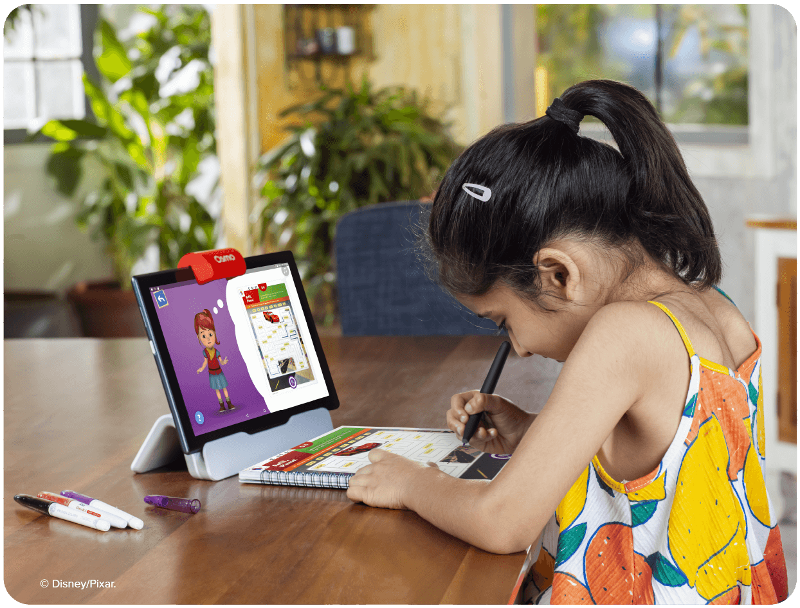

<!DOCTYPE html!>
<html lang="en"></html>
<head>
    <meta charset="utf-8">
  <meta name="viewport" content="width=device-width, initial-scale=1">
    
<link rel="stylesheet" href="https://maxcdn.bootstrapcdn.com/bootstrap/3.4.0/css/bootstrap.min.css">
    
<script src="https://ajax.googleapis.com/ajax/libs/jquery/3.4.1/jquery.min.js"></script>

<script src="https://maxcdn.bootstrapcdn.com/bootstrap/3.4.0/js/bootstrap.min.js"></script>
    <title>BYJU'S FutureSchool || Campus Life</title>

    <link rel="stylesheet" href="style.css">
    
    <link href="https://fonts.googleapis.com/css?family=Cinzel+Decorative&display=swap" rel="stylesheet"> 

<link rel="stylesheet" href="https://cdnjs.cloudflare.com/ajax/libs/font-awesome/4.7.0/css/font-awesome.min.css">
</head>
<body>
    <h1>Campus Life</h1>
    <nav class="navbar-inverse My_Nav_Bar">
        <div class="navbar-header">
         <button type="button" class="navbar-toggle" data-toggle="collapse" data-target="#My_Nav_Bar">
            <span class="icon-bar"></span>
            <span class="icon-bar"></span>
            <span class="icon-bar"></span>
         </button>   
         <a class="navbar-brand" href="index.html">BYJU'S FutureSchool</a>
        </div>
        <div class="collapse navbar-collapse" id="My_Nav_Bar">
            <ul class="nav navbar-nav">
                <li><a href="index.html">Home</a></li>
                <li><a href="campus-life.html">Campus Life</a></li>
                <li><a href="latest.html">Latest</a></li>
                <li><a href="curriculum.html">Curriculum</a></li>
                <li><a href="contact.html">Contact</a></li>
            </ul>
        </div>
    </nav>
</div>
<div class="container">
    <h2 class="page-header">Digital Learning</h2>
    
    <center>
        <div class="digital-learning">
            

            <h4 class="text-capitalize">Digital Learning</h4>

            <hr>

            <h5 class="text-success text-capitalize">Founded in 2011</h5>

            <p class="text-muted">Byju's app was developed by Think and Learn Pvt. Ltd, a company which was established by Byju Raveendran, Divya Gokulnath and a group of students in 2011.[7][1][8] Byju, an engineer by profession, was coaching students in mathematics since 2006.[7][9] During the initial days, the company focused on offering online video-based learning programs for the K-12 segment and for competitive exams.[10][11] In 2012, the firm entered Deloitte Technology Fast 50 India and Deloitte Technology Fast 500 Asia Pacific ratings and has been present there ever since.[1][12] In August 2015

                In August 2015, the firm launched Byju's: The Learning App.[13][10] In 2017, they launched Byju's Math App for kids and Byju's Parent Connect app.[14][15] By 2018, it had 15 million users out of which 900,000 were paid users at that time.[16][17] In the same year, Byju's became India's first edtech unicorn.[18] By 2019, 60% of BYJU’S students were from non-metros and rural cities.[19]
                
                In January 2022, the company joined Simplilearn, Unacademy, upGrad, PrepInsta Prime and Vedantu to become one of the founding members of IAMAI's India EdTech Consortium.[20]
                
                In March 2022, it signed a contract with Qatar Investment Authority to establish a new edtech company and an R&D centre in Doha.[21]
                
                In August 2022, Bloomberg News reported that the Ministry of Corporate Affairs sent a letter to Byju's asking them to explain the non-filing of its audited financials for the year ending March 2021. Byju's reasoned that the 17-month delay was due to the challenge of consolidating the accounts of its acquisitions during that year.[22] In spite of the delay, Deloitte gave the company a clean audit.[23] In November 2022, many employees of Byju's came out to speak against the company's unfair treatment. Reportedly, Byju's sacked over 5,000 employees.[24] In April 2023, the Enforcement Directorate announced that it had conducted searches at Byju's offices under the Foreign Exchange Management Act and seized "incriminating" documents.[25]</p>
        </div>        
    </center>

    <br> <br>
    <center>
        <div class="digital-learning">
            

            <h4 class="text-capitalize">Digital Learning</h4>

            <hr>

            <h5 class="text-success text-capitalize">Founded in 2011</h5>

            <p class="text-muted">Byju's app was developed by Think and Learn Pvt. Ltd, a company which was established by Byju Raveendran, Divya Gokulnath and a group of students in 2011.[7][1][8] Byju, an engineer by profession, was coaching students in mathematics since 2006.[7][9] During the initial days, the company focused on offering online video-based learning programs for the K-12 segment and for competitive exams.[10][11] In 2012, the firm entered Deloitte Technology Fast 50 India and Deloitte Technology Fast 500 Asia Pacific ratings and has been present there ever since.[1][12] In August 2015

                In August 2015, the firm launched Byju's: The Learning App.[13][10] In 2017, they launched Byju's Math App for kids and Byju's Parent Connect app.[14][15] By 2018, it had 15 million users out of which 900,000 were paid users at that time.[16][17] In the same year, Byju's became India's first edtech unicorn.[18] By 2019, 60% of BYJU’S students were from non-metros and rural cities.[19]
                
                In January 2022, the company joined Simplilearn, Unacademy, upGrad, PrepInsta Prime and Vedantu to become one of the founding members of IAMAI's India EdTech Consortium.[20]
                
                In March 2022, it signed a contract with Qatar Investment Authority to establish a new edtech company and an R&D centre in Doha.[21]
                
                In August 2022, Bloomberg News reported that the Ministry of Corporate Affairs sent a letter to Byju's asking them to explain the non-filing of its audited financials for the year ending March 2021. Byju's reasoned that the 17-month delay was due to the challenge of consolidating the accounts of its acquisitions during that year.[22] In spite of the delay, Deloitte gave the company a clean audit.[23] In November 2022, many employees of Byju's came out to speak against the company's unfair treatment. Reportedly, Byju's sacked over 5,000 employees.[24] In April 2023, the Enforcement Directorate announced that it had conducted searches at Byju's offices under the Foreign Exchange Management Act and seized "incriminating" documents.[25]</p>
        </div>        
    </center>

    <br> <br>
    <center>
        <div class="digital-learning">
            

            <h4 class="text-capitalize">Digital Learning</h4>

            <hr>

            <h5 class="text-success text-capitalize">Founded in 2011</h5>

            <p class="text-muted">Byju's app was developed by Think and Learn Pvt. Ltd, a company which was established by Byju Raveendran, Divya Gokulnath and a group of students in 2011.[7][1][8] Byju, an engineer by profession, was coaching students in mathematics since 2006.[7][9] During the initial days, the company focused on offering online video-based learning programs for the K-12 segment and for competitive exams.[10][11] In 2012, the firm entered Deloitte Technology Fast 50 India and Deloitte Technology Fast 500 Asia Pacific ratings and has been present there ever since.[1][12] In August 2015

                In August 2015, the firm launched Byju's: The Learning App.[13][10] In 2017, they launched Byju's Math App for kids and Byju's Parent Connect app.[14][15] By 2018, it had 15 million users out of which 900,000 were paid users at that time.[16][17] In the same year, Byju's became India's first edtech unicorn.[18] By 2019, 60% of BYJU’S students were from non-metros and rural cities.[19]
                
                In January 2022, the company joined Simplilearn, Unacademy, upGrad, PrepInsta Prime and Vedantu to become one of the founding members of IAMAI's India EdTech Consortium.[20]
                
                In March 2022, it signed a contract with Qatar Investment Authority to establish a new edtech company and an R&D centre in Doha.[21]
                
                In August 2022, Bloomberg News reported that the Ministry of Corporate Affairs sent a letter to Byju's asking them to explain the non-filing of its audited financials for the year ending March 2021. Byju's reasoned that the 17-month delay was due to the challenge of consolidating the accounts of its acquisitions during that year.[22] In spite of the delay, Deloitte gave the company a clean audit.[23] In November 2022, many employees of Byju's came out to speak against the company's unfair treatment. Reportedly, Byju's sacked over 5,000 employees.[24] In April 2023, the Enforcement Directorate announced that it had conducted searches at Byju's offices under the Foreign Exchange Management Act and seized "incriminating" documents.[25]</p>
        </div>        
    </center>
</div>
    </body>
    </html>